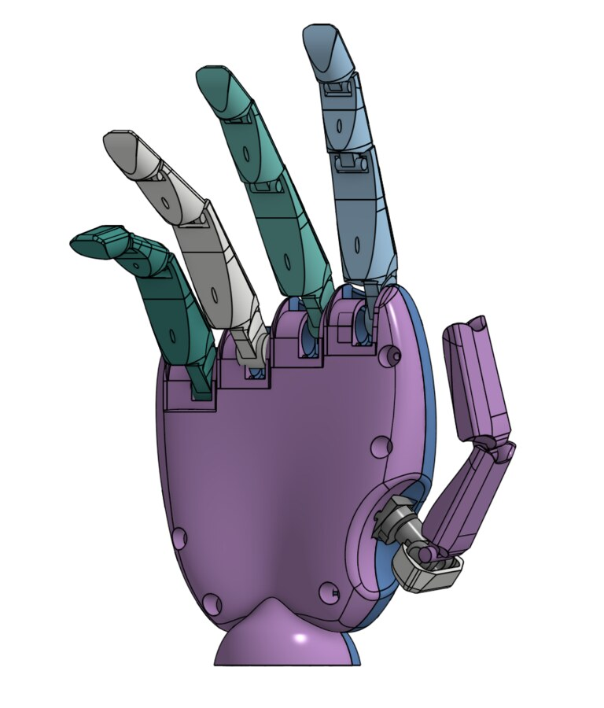
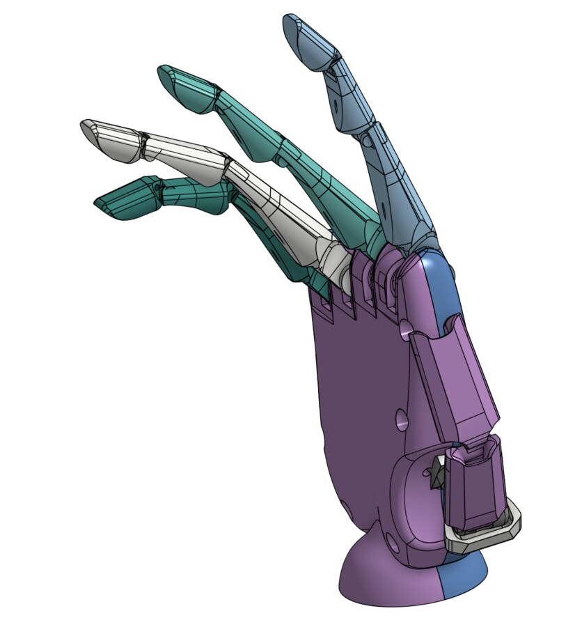
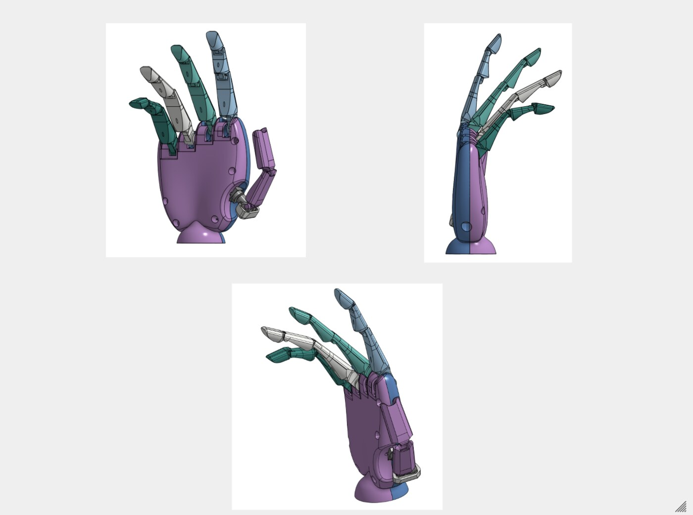
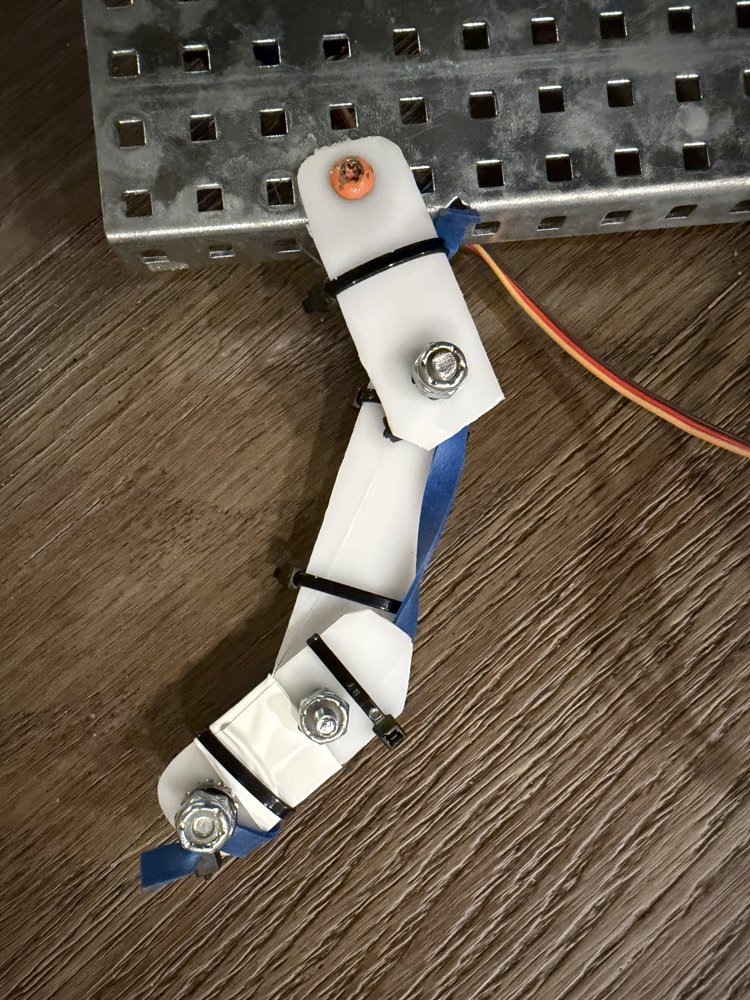
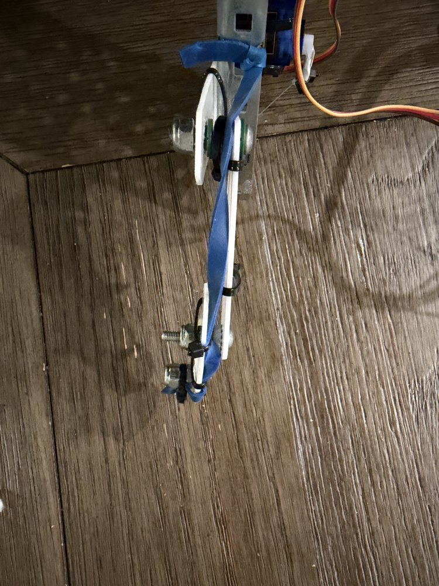
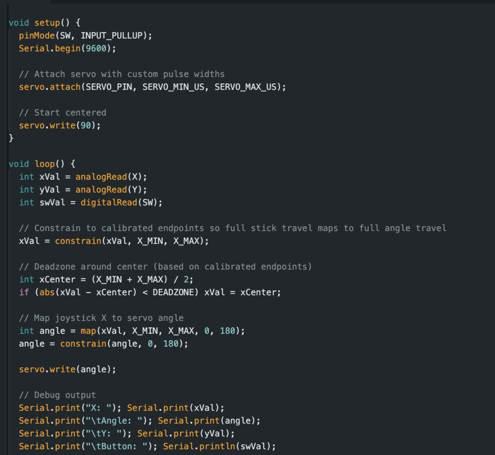
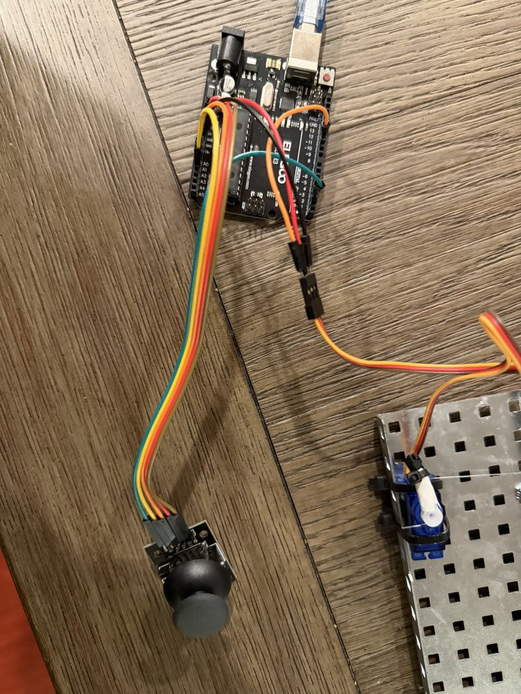

An independent, low-cost prosthetic hand, currently at the proof-of-concept stage: a full five-finger hand is designed in CAD, and a single 3D-printed finger has been built and actuated to validate the mechanism before committing to the full build.
Overview
The goal is a low-cost, mechanically simple prosthetic hand — 3D-printed structural components driven by hobby servos rather than expensive myoelectric actuators, aimed at making assistive tech more affordable and accessible. The full hand is designed as five independently-jointed fingers plus a rotating thumb, each finger built from segmented links connected by pin joints.



Full-hand CAD design — five fingers plus a rotating thumb, the target for the next build
Proof-of-concept: single-finger actuation
Before committing to building all five fingers, I built and actuated a single finger first, to validate the mechanism. Each finger segment is polycarbonate, connected at the joints and driven by a hobby servo through a tendon — an elastic strap routed through the joints that pulls the finger closed as the servo rotates, the same basic principle real tendon-driven prosthetic fingers use. For now, actuation is controlled directly by an analog joystick rather than any biosignal input, which lets me test and calibrate the servo range and tendon routing before adding real control input on top of it.


The finger prototype — tendon (blue strap) routed through each joint, pulled by the servo
The finger actuating — servo pulling the tendon closed
Full-hand CAD walkaround — what's being built next
Control code
The joystick's X-axis is read, constrained to its calibrated endpoints, given a small deadzone around center so the finger doesn't drift from sensor noise while idle, then mapped to a 0-180° servo angle:

Joystick-to-servo mapping, with calibrated deadzone

Full wiring — joystick into the Arduino, servo output driving the finger
Status
Actively in development. Next steps: build out the remaining four fingers and thumb from the CAD design, then replace the joystick with real control input.